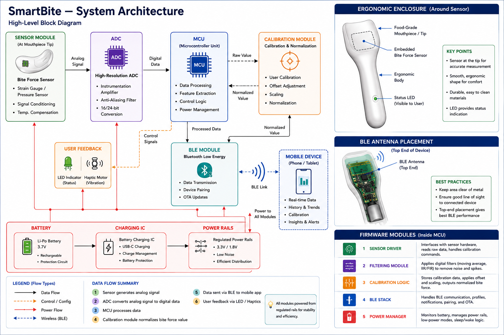

Bite-Force Sensing
Sensor selection, placement, pressure distribution, moisture isolation, ADC requirements, and signal filtering.
Experimental oral-health engineering platform
SmartBite starts with a compact bite-force sensing mouthpiece that combines embedded sensors, signal processing, calibration, BLE communication, and ergonomic design.
The project is currently in V0 prototype planning: defining the sensing architecture, validating design constraints, and preparing for bench-first engineering tests.

The early SmartBite system focuses on the embedded hardware and firmware foundation: sensing force at the mouthpiece, processing the signal, normalizing values through calibration, and sending useful data to a connected device.
Sensor selection, placement, pressure distribution, moisture isolation, ADC requirements, and signal filtering.
MCU logic for sampling, feature extraction, calibration, power management, and user feedback control.
Mouthpiece comfort, safe material choices, smooth enclosure geometry, BLE antenna placement, and cleanability.
SmartBite is being developed in staged prototypes so each build answers a specific engineering question before the design becomes more compact and consumer-ready.
Single sensor, basic mouthpiece, ADC/MCU pipeline, calibration workflow, and BLE data transmission.
Better ergonomics, improved sensor accuracy, stronger enclosure design, battery optimization, and app integration.
Multi-sensor designs, richer analytics, refined industrial design, and expanded oral-health prototype capabilities.
The repository is organized as an engineering notebook for the product concept, hardware architecture, firmware planning, and prototype decisions.